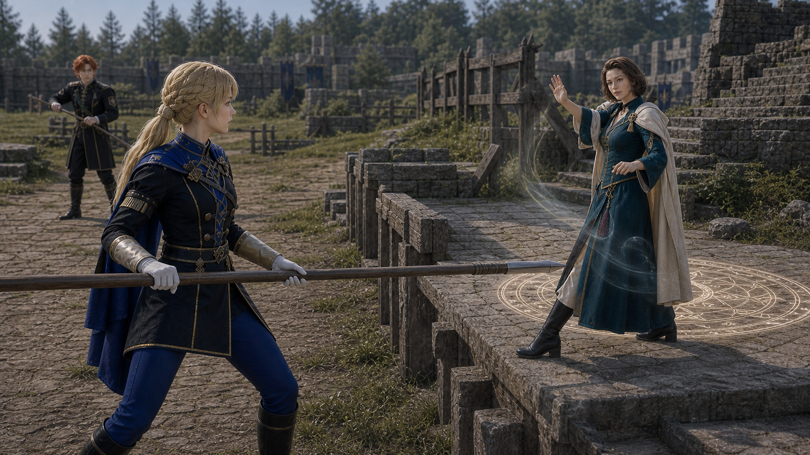

Shot033D keyframe
qa_passed / P0
episodes/EP02/generated/mock_battle_production_keyframes_2026-07-17/Shot033D_keyframe.pngIngrid 逼 Manuela 离开 heal tile+

qa_passed / P0
episodes/EP02/generated/mock_battle_production_keyframes_2026-07-17/Shot033D_keyframe.png
blonde disciplined lancer, precise side entry and teacher-platform cut-off
assets/characters/blue_lions/Ingrid/academy/selected.png
beautiful adult former-opera-star teacher, white magic support near heal tile
assets/characters/church_of_seiros/Manuela/academy/selected.png
red-orange-haired lancer, draws flank pressure and turns serious under threat
assets/characters/blue_lions/Sylvain/academy/selected.pngManuela is visible as a beautiful adult teacher on the raised support position, not an abstract map marker.
episodes/EP02/generated/mock_battle_production_keyframes_2026-07-17/Shot033D_A_keyframe.png
Ingrid enters with disciplined lance movement, cutting off Manuela's easiest retreat route.
episodes/EP02/generated/mock_battle_production_keyframes_2026-07-17/Shot033D_B_keyframe.png
The healing angle from Manuela to Hanneman's platform weakens as Ingrid forces her step off the tile.
episodes/EP02/generated/mock_battle_production_keyframes_2026-07-17/Shot033D_C_keyframe.png
Dimitri and Dedue can now start the stair push toward the teachers.
episodes/EP02/generated/mock_battle_production_keyframes_2026-07-17/Shot033D_D_keyframe.png